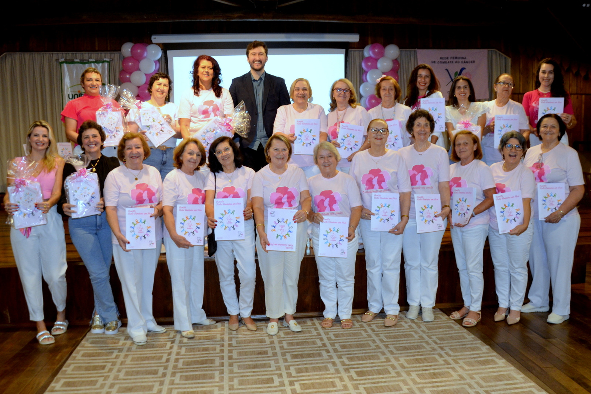
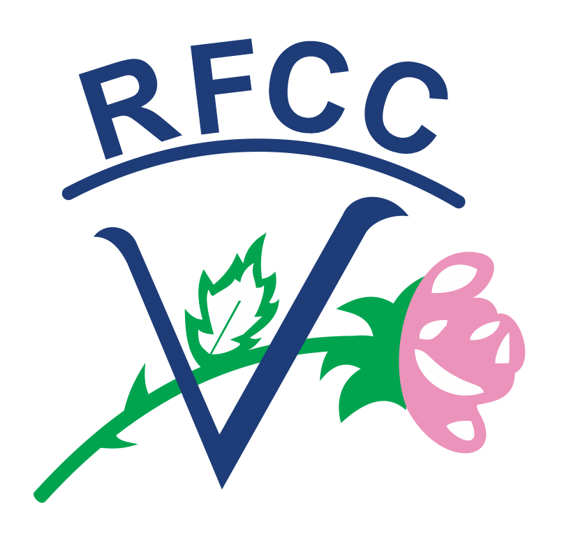

Conheça Nossa História
Desde 1998 ajudando as mulheres.

A Rede Feminina de Combate ao Câncer (RFCC) de Orleans foi fundada em 8 de maio de 1998, a partir da iniciativa e do trabalho de um grupo de mulheres voluntárias. Desde sua criação, a entidade tem se dedicado a oferecer assistência gratuita, conscientização e prevenção do câncer, principalmente o de mama e o do colo de útero, às mulheres da comunidade.
Saiba MaisCuidados e Prevenção
Prevenir é o melhor caminho para salvar vidas
A Rede Feminina de Combate ao Câncer dedica-se a orientar e conscientizar mulheres sobre a importância da prevenção e do diagnóstico precoce. O cuidado começa com o autoconhecimento e com hábitos saudáveis que ajudam a reduzir os riscos de câncer.
- 💗 Realize o autoexame das mamas mensalmente.
- 💗 Faça exames preventivos regularmente, como a mamografia e o papanicolau.
- 💗 Mantenha uma alimentação equilibrada e pratique atividades físicas.
- 💗 Evite o consumo excessivo de álcool e não fume.
- 💗 Consulte seu médico e siga as orientações para check-ups periódicos.

Nossos Eventos
Campanhas e Ações da Rede Feminina de Orleans
A Rede Feminina de Combate ao Câncer de Orleans realiza diversos eventos ao longo do ano, com o objetivo de promover a prevenção, arrecadar recursos e fortalecer a solidariedade na comunidade.
- 🎀 Outubro Rosa: campanhas de conscientização e palestras educativas.
- 💐 Bazar Solidário: arrecadação de fundos e roupas doadas pela comunidade.
- 💖 Caminhadas e Corridas da Esperança: incentivo à atividade física e à prevenção.
- 🌸 Chás Beneficentes: encontros para fortalecer laços e compartilhar histórias de superação.

Nosso Endereço
Rede Feminina de Combate ao Câncer de Orleans
Você pode nos encontrar em nossa sede no município de Orleans, Santa Catarina. Estamos de portas abertas para acolher, orientar e ajudar mulheres em todas as fases da vida.
📍 Endereço: R. Profa. Otília Mendes Mazuco, 270 - Rio Belo, Orleans - SC, 88870-000
☎️ Telefone: (48) 99926-4507
⏰ Horário de Atendimento: Segunda a Sexta, das 8h às 12h e das 13h30 às 17h
Entre em Contato
Fale conosco, participe e ajude a transformar vidas 💕
📍 Endereço: R. Profa. Otília Mendes Mazuco, 270 - Rio Belo, Orleans - SC, 88870-000
📞 Telefone: (48) 99926-4507
✉️ E-mail: redefemininaorleans@gmail.com
⏰ Horário de Atendimento: Segunda a Sexta - 13h às 17h


Rede Feminina de
Rede Feminina de
Combate ao Câncer


Agenda de Eventos
Mês/Ano Atual
Dom
Seg
Ter
Qua
Qui
Sex
Sáb
Cuidados e Prevenção contra o Câncer
A prevenção é uma das ferramentas mais poderosas no combate ao câncer. A Rede Feminina de Combate ao Câncer trabalha para conscientizar e orientar a população, principalmente as mulheres, sobre a importância de conhecer o próprio corpo e realizar exames de rotina.
"Detectar o câncer em estágio inicial aumenta significativamente as chances de cura."
🩷 Autoexame das Mamas
O autoexame é um gesto simples que pode salvar vidas. Ele deve ser realizado mensalmente, de preferência alguns dias após o fim do ciclo menstrual. Observe alterações no tamanho, formato, textura da peau ou presença de secreções.
🩷 Exames de Rotina
Além do autoexame, é fundamental realizar consultas médicas periódicas. Entre os principais exames estão:
- Mamografia: indicada para mulheres acima de 40 anos ou conforme orientação médica.
- Papanicolau: essencial para a detecção precoce do câncer do colo do útero.
- Exames de sangue e ultrassonografias: ajudam no acompanhamento da saúde geral.
🩷 Alimentação e Hábitos Saudáveis
Uma dieta equilibrada rica em frutas, verduras e legumes contribui para o fortalecimento do sistema imunológico e ajuda na prevenção de diversos tipos de câncer.
- Prefira alimentos naturais e evite processados.
- Pratique atividades físicas regularmente.
- Evite o tabagismo e o consumo excessivo de álcool.
🩷 A Importância do Apoio e da Conscientização
A Rede Feminina oferece apoio emocional, palestras educativas e ações comunitárias que buscam promover o bem-estar e a saúde das mulheres. A prevenção é um ato de amor consigo mesma e com quem você ama.
⬅ Voltar à Página InicialHistória da Rede Feminina de Combate ao Câncer de Orleans
A Rede Feminina de Combate ao Câncer (RFCC) de Orleans foi fundada em 8 de maio de 1998, graças à dedicação e à união de um grupo de mulheres voluntárias que enxergaram a necessidade de promover a prevenção e o apoio às pessoas com diagnóstico de câncer em sua comunidade.
Desde o início, a RFCC de Orleans tem como missão principal a conscientização, a prevenção e o apoio emocional e social às mulheres que enfrentam o câncer. O trabalho é inteiramente voluntário e sem fins lucrativos, sendo sustentado por doações, eventos beneficentes e pelo esforço coletivo da comunidade local.
"O amor ao próximo é o que move cada uma das voluntárias da Rede Feminina. Nossa força vem da união e da esperança."
📜 Primeiros Passos
No final da década de 1990, o câncer de mama e de colo do útero ainda eram temas pouco discutidos. Foi então que um grupo de mulheres de Orleans decidiu agir, inspiradas por outras redes femininas existentes no estado de Santa Catarina. O grupo começou realizando palestras em escolas, empresas e comunidades, buscando romper tabus e incentivar o autocuidado.
💗 Crescimento e Conquistas
Com o passar dos anos, a RFCC de Orleans estruturou seu trabalho, ampliando o número de voluntárias e fortalecendo parcerias com profissionais da saúde, prefeituras e instituições de ensino, como o Centro Universitário Barriga Verde (Unibave).
Além das campanhas de prevenção, a rede oferece atendimento gratuito às mulheres que necessitam de exames preventivos, doação de lenços e próteses mamárias externas, além de apoio psicológico e emocional.
1998
Fundação oficial da RFCC de Orleans, com um pequeno grupo de voluntárias e apoio da comunidade.
2005
Criação de parcerias com unidades de saúde e campanhas anuais do Outubro Rosa.
2015
Ampliação das atividades com palestras educativas, eventos beneficentes e novos programas de prevenção.
Hoje
A RFCC Orleans segue firme, com dezenas de voluntárias comprometidas em levar esperança, informação e acolhimento às mulheres de toda a região.
🌷 Um Legado de Amor e Dedicação
A história da Rede Feminina de Combate ao Câncer de Orleans é marcada por solidariedade, amor e comprometimento. Cada ação, cada atendimento e cada palestra representam a missão maior de cuidar e salvar vidas.
A entidade continua crescendo e inspirando novas gerações de mulheres a fazerem a diferença, reforçando a importância da prevenção e do apoio ao próximo.
⬅ Voltar à Página Inicial